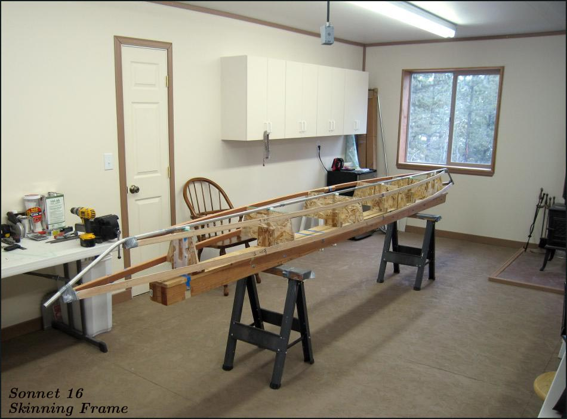

| Sonnet 16 - Construction Overview | Menu Last Page Next Page |
|

The wood skinning frame is used to define the hull shape and to allow the sponson sleeves to be glued accurately to the inside of the skin. The skinning frame is not part of the completed boat, but can be used to skin future versions of this design. The Sonnet 16 can be constructed in both 21" beam and 22.5" beam versions. The Sonnet 14 can be constructed in both 22" beam and 23.5" beam versions. The aluminum keel and stems are part of the finished inflatable. The next several pages contain some details of the boat's construction. The builders manual will be in much greater detail.
|
|